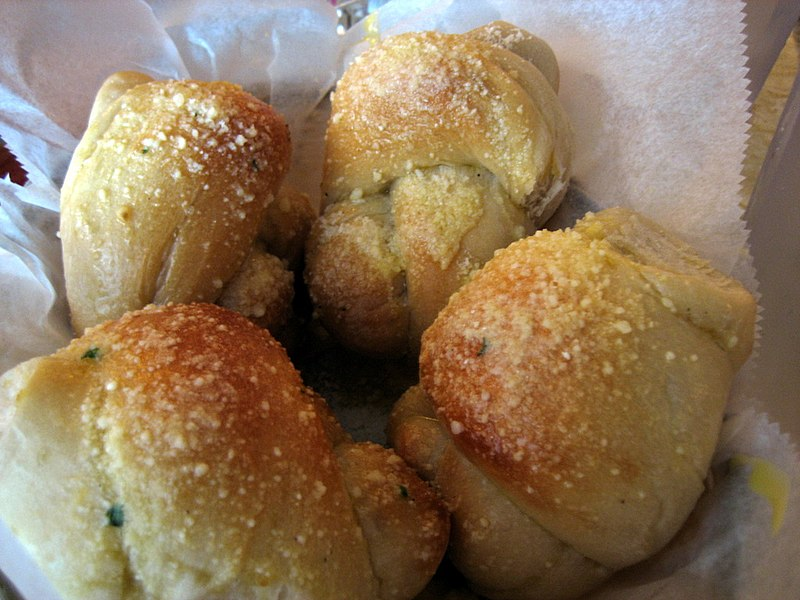

Description
These homemade garlic knots are extra soft and fluffy, made from my favorite 6 ingredient pizza dough, and are topped with flavorful garlic herb butter before AND after baking.
Shaping is a breeze with my video tutorial and step-by-step pictures for visual help.
Ingredients
- 1 and 1/3 cups (320ml) warm water
- 2 and 1/4 teaspoons Platinum Yeast
- 1 Tablespoon (13g) granulated sugar
- 2 Tablespoons (30ml) olive oil
- 3/4 teaspoon salt
- 1/2 teaspoon garlic powder
- 3 and 1/2 cups (438g) all-purpose flour
Steps
- Whisk the warm water, yeast, and granulated sugar together in the bowl of your stand mixer fitted with a dough hook or paddle attachment. Cover and allow to rest for 5 minutes.
- Add the olive oil, salt, garlic powder, and half of the flour. Beat for 15 seconds, then add the remaining flour. Beat on low speed for 2 minutes. Turn the dough out onto a lightly floured surface. With lightly floured hands, knead the dough for 3-4 minutes (for a visual, watch me do it in the video above). The dough can be a little too heavy for a mixer to knead it, but you can certainly use the mixer on low speed instead. After kneading, the dough should still feel a little soft. Poke it with your finger – if it slowly bounces back, your dough is ready to rise. If not, keep kneading.
- Lightly grease a large bowl with oil or nonstick spray– just use the same bowl you used for the dough. Place the dough in the bowl, turning it to coat all sides in the oil. Cover the bowl with aluminum foil, plastic wrap, or a clean kitchen towel. Allow the dough to rise at room temperature for 1-2 hours or until double in size.
- Use the video tutorial and step-by-step photos above as your guide for this step. When the dough is ready, punch it down to release the air. Using floured hands on a lightly floured work surface, shape the dough into a 16×5 inch log. (5 inch width really isn’t as important as the 16 inch length here, no need to be exact.) Using a very sharp knife, pizza cutter, or bench scraper, slice into 16 1-inch strips. Roll each strip into 8 inch ropes. Tie each into knots. You can tuck the two ends of the knots underneath the knot or leave them out, that’s up to you. Arrange the knots on 2 lined baking sheets.
- Lightly cover the shaped knots and let them rest for at least 30 minutes and up to 45 minutes. They will slightly puff up during this time, producing softer rolls.
- Towards the end of the rise time, preheat oven to 400°F (204°).
- Bake for about 20-23 minutes or until golden brown on top. Remove from the oven and brush the warm knots with remaining garlic butter. Sprinkle with parmesan cheese and/or parsley, if using.